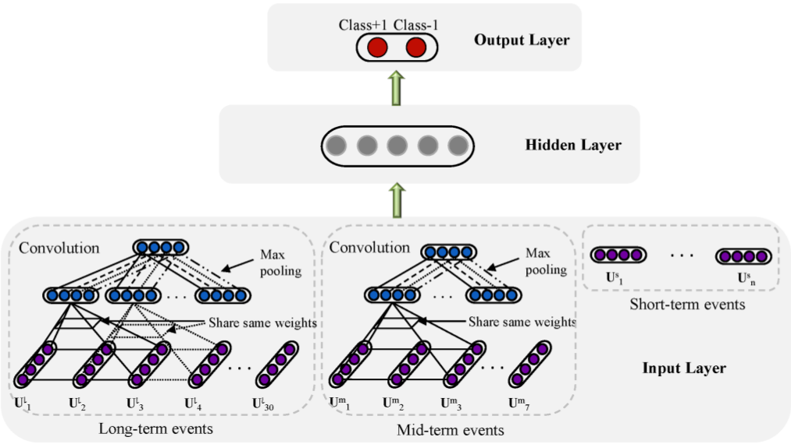

Deep Learning for Event-Driven Stock Prediction
"What" part of the paper
Predicting stock movement from the events occuring in the news. Task is considered to be classification and not regression, such that the model will say if the stock price is going to go up or down looking at the news events.
"How" part of the paper
Event extraction from news using Open IE as a tuple as E = (O1, P, O2, T) where P is the action, O1 is the actor, O2 is the object and T is the time-stamp of the event. Time stamp is used to align the events with the historical stock price. Eample for a line in the news, "Jan 13, 2014 - Google Acquires Smart Thermostat Maker Nest For for $3.2 billion." Open IE will exact event as (Actor = Google, Action = acquires, Object = Nest, Time = Jan 13, 2014)
For the lines in news, if such extraction is not possible, those lines are filtered out.
Once the events are extracted Event embeddings are learnt. This is done by a Neural Tensor Network. Each of the attributes in the event (actor, action, object) and converted to word embeddings, if any of the attributes have more than one word, average of all the word embeddings is taken for that particular attirbute.
The central idea of learning these embeddings is that there can be many similar events having different arguments in the event. So even if the actor, action, objects are slightly different, the event can still be similar to other event having different attributes.
The intermediate vectors such as R1 in the figure is computed as:
Where in first product term in above equation is bilinear tensor product. Second product term is normal feed forward neural network. SImilar way all the other intermediate vectors are computed and also the final event embedding.
For Training these embeddings, as assumption is made that the event tuple in the training set should be given higher score than the corrupted event tuple. Corrupted event tuple implies a tuple where one of the argument is replaced with random argument. Example corrupted event tuple is denoted by Er=(O1r,P,O2) for the correct event tuple E=(O1,P,O2) where O1 is replaced by a random word in training dictionary to get O1r.
The loss to be minimized is given as:
Here Φ = (T1, T2, T3, W, b), are the parameters of the model. If the loss is equal to zero, algorithm moves to the next tuple. If it it non-zero, it updates the weights using Backpropagation to minimize the loss.
After getting the event embeddings, The deep learning prediction model is shown below.
Long-term events are modeled for events over last month, mid-term events are modeled as events over last week and short-term events are modeled as events over last day.
The event embeddings are passed through CNN layer and after that it is passed through max pooling layer. For short-term event embedding, average is taken over all the news in a day. This results in a feature vector of Vc = (Vl, Vm, Vs) which incorporates long-term, mid-term and short-term dependencies. This feature vector is concatenated and passed through a feed forward neural network having 2 hidden layer. This feed forward neural network has 2 neurons in the output layer which classifies market will move up or down.